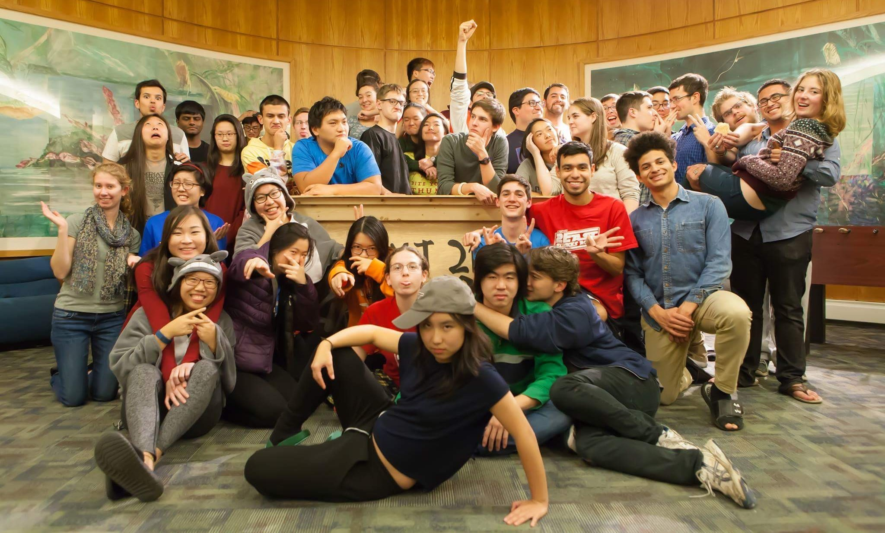

Welcome to virtual 2E!
Two East is a family-like community with a diverse set of interests. We have a bunch of activities we do together, sometimes even unplanned, like picnics, ice hockey, impromptu musical jam sessions, movie viewings, philosophical discussions, and restaurant visits.
We all eat dinner together at 5:30 in the legendary “5:30 Dinner Club,” which is rivaled only by the “8 a.m. Breakfast Club.”
We are a community where people often work in the lounge, or leave their doors open as they work, so they can chat with the friendly passerby. Our lounge is always bustling with random happenstance: debates, LoL, PSETting, puns and their following groans, anime, Rocket League or Smash, and general friendshippery.
We do projects together that everyone is welcome to join in on, from things as small as baking a cake or playing a sport, to things as large as building and operating a haunted house, directing and creating a play production, or creating a legit piece of furniture.
We get competitive and excitable about bean dip contests or tug-of-war… or really anything that allows it. Our motto: “Fiercely competitive; no skill required.”
Above all else, we are a community where we support each other, get excited, and build each other up.